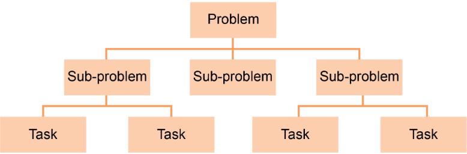

GCSE Computing - Algorithms, Decomposition and Abstraction
What is an Algorithm?
Definitions:
An algorithm is a series of steps that can be followed to complete a task. It is not the same as a computer program.
A working algorithm will always finish and return an answer or perform the task it was supposed to.
Algorithms aren't just in programming. They are everywhere. For example:
Recipes
Directions
Instructions for DIY furniture.
Here is an example problem
How do I make tea?
A solution might be
1. Boil water.
2. Put the water into the mug.
3. Get a tea bag and put it into the mug.
4. Stir the tea bag around (if the tea hasn't fully dissolved).
5. Scoop out the tea bag and put it in the bin.
6. Pour milk in.
7. Add sugar to taste.
That is an algorithm as it has steps that allow the person to complete a task.
There are many ways to create algorithms such as in flowcharts and psuedocode.
But we wil be looking at how to break down the program and then structure them in the different ways.
Decomposition
When you start programming, your whole program won't be that long and will most likely fit your screen, but as your programs get more complex, they can quickly become too big and unmanageable.
Definition:
Decomposition is the breaking down of a problem into smaller, simpler steps.
It works by turning a big problem into sub-problems and then into smaller tasks.

Imagine making a game. You will need to split the game into sub-tasks like:
Animations
Levels
Controls
Models
Computational Thinking
You need think about how certain problems can be solved by shrinking them into small tasks all of the time.
If you have a problem like fixing a CCTV system, you need to think about what is wrong and what things you need to fix.
Abstraction
Definitions:
Abstraction is the process of removing unnecessary details.
Simulations are the process of finding out what happens under different circumstances using a built model.
Like if you are trying to recognise how many people are in a city square. You won't need to collect data like:
Skin colour
Gender
What accessories the phone has
etc..
This is most used in data collection and data science be using simulations.